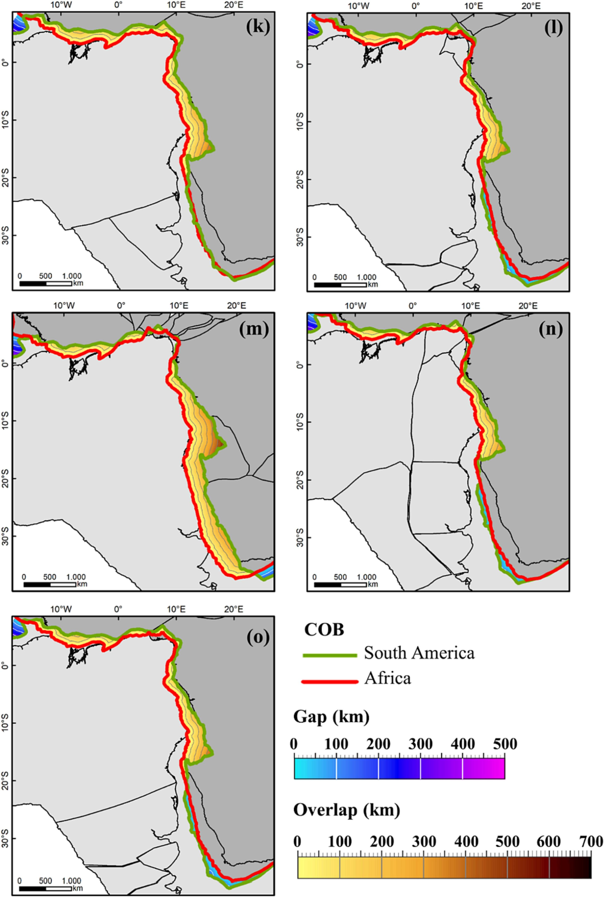

Review and critical assessment on plate reconstruction models for the South Atlantic

Resumo em Português
A ruptura de um supercontinente é um processo vital da evolução tectônica global. A forma exata como o Gondwana Ocidental e a Pangeia se fragmentaram é um tema controverso, com muitas questões e problemas não resolvidos que os modelos de reconstrução tentam solucionar. Desde meados do século XX, no contexto da modelagem da evolução tectônica do Atlântico Sul, diversos trabalhos contribuíram para a compreensão da configuração pré-ruptura da América do Sul e da África, dos estágios iniciais do rifte e da cinemática envolvida na ruptura. No entanto, esses modelos de reconstrução de placas apresentam diversos problemas de incompatibilidade. Neste trabalho, revisamos e analisamos essas incompatibilidades com base em dados geofísicos e geológicos compilados, reproduzindo e comparando 15 modelos de reconstrução desde o trabalho pioneiro de Bullard et al. (1965). A localização e a magnitude das lacunas e sobreposições em cada modelo são significativamente diferentes, sendo que as diferenças de ajuste resultam principalmente da deformação intraplaca assumida. Algumas similaridades podem ser identificadas, como a sobreposição máxima implementada no segmento central do Atlântico Sul. Reconhece-se que a quantificação precisa da deformação intraplaca representa um desafio nos modelos refinados, e argumenta-se que os modelos do Atlântico Sul que restauram a deformação intraplaca utilizando condicionantes geológicos e cinemáticos tendem a alcançar melhor ajuste.